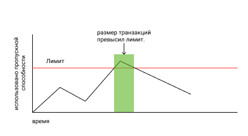
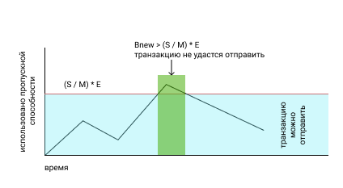

Пропускная способность¶
Примечание: пропускная способность измерятся в байт/shares. То есть показывает сколько байт вы можете отправить не за секунду, а за один долевой токен - Shares
Большинство блокчейн проектов заставляют пользователей платить за каждую операцию, чтобы ограничить спам и сделать его экономически невыгодным. Но VIZ не заставляет пользователей платить, он используют систему динамичного частичного резервирования. При этой модели блокчейн автоматически подбирает коэффициент резервирования при разной нагрузке. Всякий раз, как происходит всплеск активности, блокчейн резко понижает пропускную способность каждого аккаунта. Когда всплеск окончен, и в пропускном канале освободилось место, блокчейн медленно увеличивает пропускную способность каждого пользователя.
Каждый раз, когда пользователь подписывает транзакцию, она учитывается в его скользящей средней пропускной способности. Если скользящая пересекла лимит, то блокчейн не даст отправить эту транзакцию. В таком случае, транзакцию надо отложить, пока скользящая не опуститься ниже порогового значения.
Так как информация от пользователя размещается в одном блоке, а не разбивается по нескольким, то невозможно увеличить время передачи данных, как это происходит в классических системах передачи информации (когда время передачи данных зависит от скорости пропускного канала), поэтому VIZ просто запрещает отправлять транзакцию. Получается, что пользователь не сразу испытывает неудобства, а сначала совершает операцию и потом сталкивается с проблемами, так же это значит, что пользователь не может увеличить скорость попадания транзакции в блокчейн, но может увеличить максимальный допустимый размер транзакции для своего аккаунта, если приобретет дополнительную долю в сети.

Данную модель, может быть, непросто понять с первого раза. Давайте рассмотрим аналогию. Возьмем пустую банку. Ее объем - это размер зарезервированной пропускной способности. Заполним банку наполовину водой, столько занимает одна транзакция. Теперь наденем на банку крышку с маленьким отверстием. Перевернем банку. Через некоторое время из нее вытечет половина объема воды. Перевернем банку обратно и сними крышку. Нальем еще воды, равный половине объема банки. У нас осталось 1/4 свободного пространства. Теперь, если мы захотим налить еще воды, объем которой равен половине объема банки, то нам нужно отлить не менее 1/4 от объема банки, но мы не можем вылить этот объем сразу, для этого нам нужно надеть крышку с дыркой и перевернуть банку. Таким образом, можно сразу занять водой требуемый объем банки, но чтобы освободить в ней еще места, придется ждать некоторое время. Так и с транзакциями. Можно быстро отправить транзакцию в блокейн, но для отправки еще одной потребуется время.
Чем отличается частичное резервирование от полного¶
Давайте представим, что в VIZ используется система полного резервирования. Это значит, что каждый пользователь может использовать часть пропускного канала пропорционально его доли в сети. Но невозможно использовать блокчейн в одно и то же время, кроме того, многим не нужно занимать весь выделенный пропускной канал. Следовательно, часть сети будет простаивать и она не сможет показать весь свой потенциал.
При частичном резервировании каждый отдельный пользователь может использовать больше пропускной способности, когда в сети не происходят активные транзакции. И меньшею во время пиковых нагрузок. В тоже время блокчейн будет использовать полное резервирование при очень сильных нагрузках. Основная сложность такой модели состоит в выборе коэффициента резервирования при разной нагрузки. Если для полного резервирования можно выставить коэффициент, равный 1, то для других ситуаций может быть множество решений. В следующей главе описано, как работает распределение пропускной способности в VIZ.
Как рассчитывается пропускная способность в VIZ¶
Перед тем как читать дальше, обратите внимание на таблицу условных обозначений ниже.
| Условное обозначение | Единица измерения | Описание |
|---|---|---|
| Bnew | байт/shares | Значение скользящей средней для пропускной способности, которое будет затрачено на данную транзакцию |
| Bold | байт/shares | Значение для скользящей средней уже затраченной пропускной способности |
| N | байт | Размер новой транзакции |
| W | секунды | Количество секунд в неделе |
| T | секунды | Разница между временем, когда была отправлена последняя транзакция и в данный момент |
| R | процент(%) | Процент выделенной пропускной способности для аккаунтов с малой долей в сети. Этот параметр устанавливают делегаты |
| C | целое число | Число активных аккаунтов(отправляли хотя бы одну транзакцию за 30 дней) с малой долей сети |
| Smax | Shares | Объем доли конкретного аккаунта |
| S | Shares | Объем доли конкретного аккаунта с учетом процента, выделенного для аккаунтов с малой долей сети. |
| M | Shares | Объем доли всех аккаунтов |
| G | байт | Максимальный размер блока. Это параметр устанавливается делегатами |
| K | целое число | Коэффициент резервирования пропускной способности от 1 до 2000 |
| L | целое число | Количество блоков, которое будет сгенерированно за неделю |
| E | байт/shares | G * L * K - максимальная пропускная способность при данной нагрузке |
Примечание: значение R устанавливают делегаты, они же определяют какой объем доли считать малым. Кроме того, делегаты могут запретить отправлять транзакции для участников с малым объемом доли.
Для каждого конкретного аккаунта устанавливается лимит пропускной способности (S / M) * Е, то есть пропорционально его доли в сети. Причем, S = Smax * (100% - R) , если Smax считается нормальной, и S = M * R / C для аккаунтов с малой долей. Это значит, что от аккаунтов с достаточным стеком отнимается часть пропускной способности и распределяется среди аккаунтов с малой долей в сети. Если Bnew превысит зарезервированное значение, то аккаунт не сможет отправить новую транзакцию. В свою очередь, Bnew вычисляется по следующей формуле:
Bnew = MAX(0, (W - T) * Bold / W) + N.
Из формулы следует, что чем больше прошло времени с последней транзакции, тем меньше будет Bnew и если последняя транзакция происходила семь дней назад, то Bnew = 0

Как VIZ определяет коэффициент резервирования¶
Каждый раз, когда значение скользящего среднего размера блока больше чем 25% от максимального размера блока G, блокчейн уменьшает К в два раза. Когда нагрузка спала, блокчейн снова увеличивает K, прибавляя единицу каждую минуту. Снижение K в два раза гарантирует, что аккаунты, которые использовали меньше 50% от предыдущей зарезервированной пропускной способности, не будут задеты, если нагрузку не вызвали держатели очень большого стека.
Формула расчета нового значения средней скользящей для размера блока:
Anew = (99 * Aold + Q) / 100
| Условное обозначение | Единица измерения | Описание |
|---|---|---|
| Anew | байт | Новое значение скользящей средней для размера блока |
| Aold | байт | Последнее значение скользящей средней для размера блока |
| Q | байт | Размер нового блока |
Примечание: Если коэффициент резервирования постоянно падает ниже 100, то делегаты должны задуматься об увеличении пропускной способности сети, например увеличив максимальный размер блока.